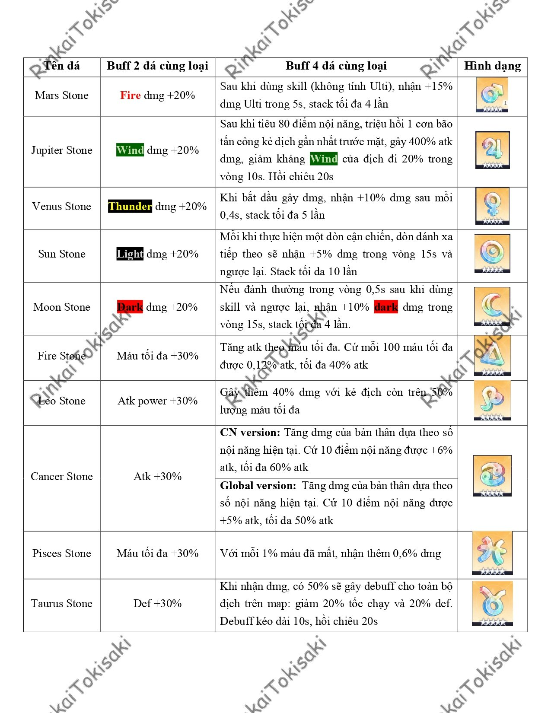
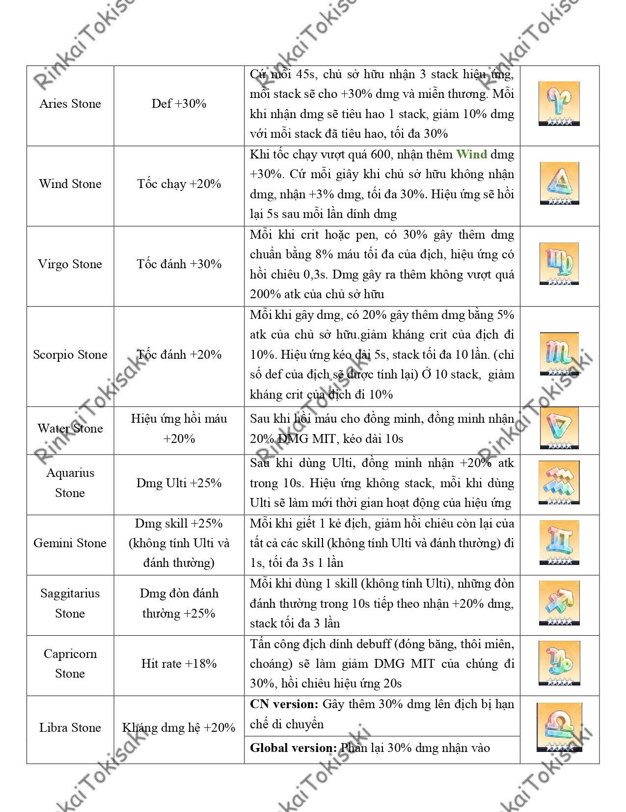

RUNESTONES
Bản dịch mode cực mới: Runestones
1. Sơ lược
o Các dòng stat trong cùng 1 không được phép trùng nhau
o Runestone hiện tại là thứ quyết định bạn yếu hay mạnh kinh khủng nhất, cũng là thứ ảnh hưởng đến stat và dmg đầu ra nhiều nhất
o Runestone có thể được chuyển từ em nọ sang em kia, giống như chế độ keepsake cũ. Bạn lắp rune nào cho ai cũng được, miễn là effect hợp lý với bạn.
o Runestone có hiệu ứng bộ 2 và 4 khi lắp cùng nhau (xem bảng ở dưới)
o Runestone có thể có level từ 0 (khi mới mua về) đến level 20. Khi bạn upgrade runestone, bạn sẽ không thể dùng Common reforge (từ sau sẽ gọi là tẩy phèn cho dễ hiểu) cho gem nữa, và đồng thời những stat phụ đã có sẵn trong viên gem đó sẽ được upgrade một cách ngẫu nhiên, nhiều hay ít và rơi vào dòng nào là do số mệnh, còn stat chính sẽ upgrade một cách cố định.
o Mỗi 4 lvl, nếu chưa đủ 4 dòng thì sẽ thêm 1 dòng, nếu đủ rồi thì sẽ nâng chỉ số cho 1 dòng ngẫu nhiên. Tổng cộng sẽ có tối đa 5 lần nâng chỉ số.
2. Phân loại:
* Adamas: chứa các stat atk cộng thẳng, def cộng thẳng, máu cộng thẳng
* Ruby: chứa các stat % atk cộng thêm, % def cộng thêm, % máu cộng thêm, % tốc chạy cộng thêm
* Turquoise: chứa các stat % atk cộng thêm, % def cộng thêm, % máu cộng thêm, % hit rate
* Crystal: chứa các stat crit rate, pierce rate, crit dmg, pierce dmg, % def cộng thêm, % máu cộng thêm
3. Tẩy stat rune (reforge):
* Tẩy phèn: Khi sử dụng kiểu tẩy này, bạn sẽ reset một cách ngẫu nhiên cả 4 (hoặc 5) stat trong viên rune của bạn, cả stat chính, stat phụ đều sẽ đổi sang dòng khác với những phẩm chất ngẫu nhiên. Bạn sẽ sở hữu loanh quanh 300-400 bình hoặc nhiều hơn, tùy thuộc mức cày cuốc của bạn trong bản cũ. Bình này khá dễ kiếm
* Tẩy xịn: Khi sử dụng tẩy này, bạn sẽ chỉ có thể đổi stat phụ chứ không thể đổi stat chính nữa. Những dòng stat phụ này sẽ được giữ tương ứng phẩm chất, và bạn có thể tùy ý chọn xem bạn muốn đổi sang dòng nào, miễn là không trùng với các dòng stat cùng rune. Tuy nhiên dòng này quý hơn vàng, mỗi người có khoảng 10 bình thôi, nên cẩn trọng khi sử dụng
VẬY CẦN LÀM GÌ ĐỂ BẮT ĐẦU BUILD RUNE? BUILD THEO THỨ TỰ NÀO?
o Trước hết bạn cần xác định char của bạn cần những stat gì, hệ dmg gì để định hình loại runestone và những dòng stat bạn sẽ muốn có trong viên rune của bạno Đi shopping sắm rune (nhớ sắm đủ 4 viên 4 màu), food đá (để up level, thiếu thốn quá thì up bằng rune * thấp hoặc những viên 5* craft hỏng cũng được), chuẩn bị kha khá bình tẩy
o Vào mục Reforge. Chọn 1 viên rune có stat chính phù hợp và có ít nhất 2 dòng stat phụ ngon nghẻ. Nếu không thể chọn được thì dùng tẩy phèn để reforge đến khi nào đạt yêu cầu
o Dùng tẩy xịn để đổi nốt những dòng bạn chưa ưng ý. Lưu ý những dòng phẩm chất ngon nên để cho crit rate và pierce rate (nhìn thấy crit/pen rate 4,33% ở phần destination là được). 1 bình chỉ có thể đổi 1 dòng stat
o Up level cho viên rune của bạn (trong mục Enhance). Chọn nguyên liệu làm food. Sau đó thmắp hmương và bấm Enhance, cầu trời cho game sẽ up đúng những dòng bạn cần
o Nếu bất kì bước nào ở trên đen quá thì lặp lại bước 1, chọn 1 viên khác và tẩy lại từ đầu
Chúc các bạn vui vẻ và nuôi waifu thật tốt
Buff độc quyền: 